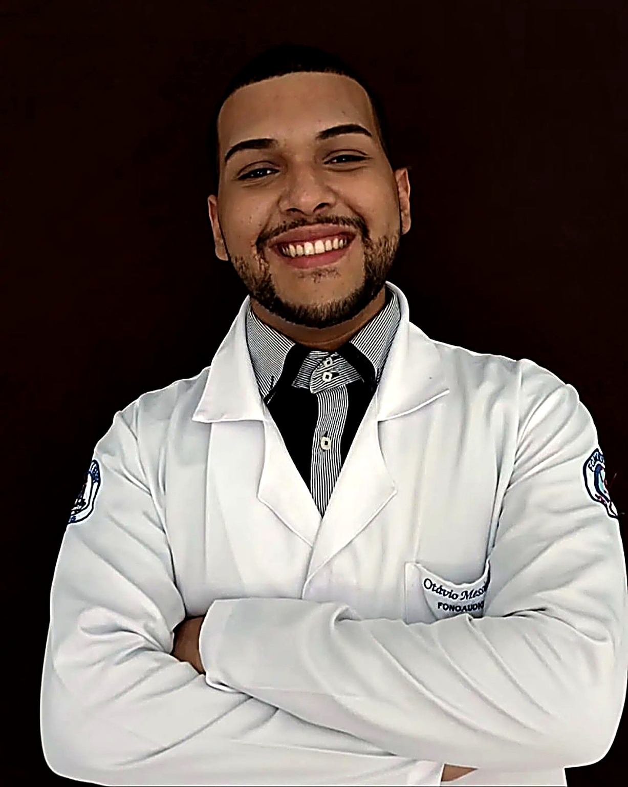
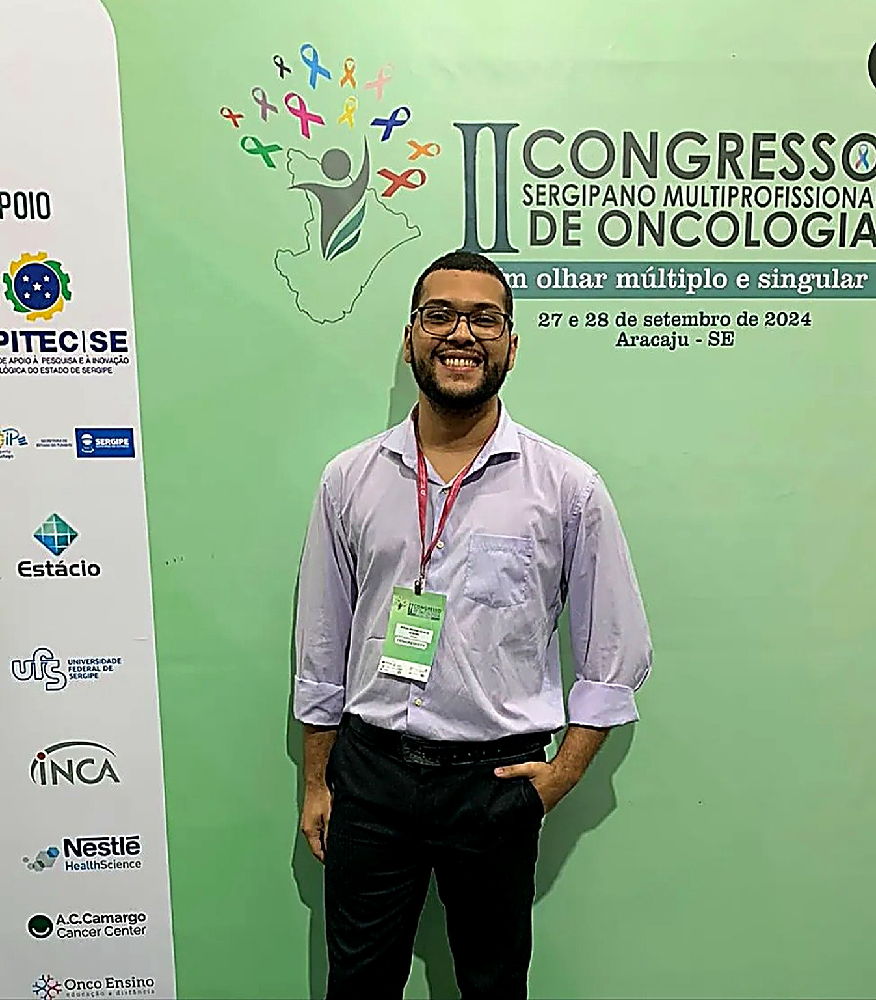
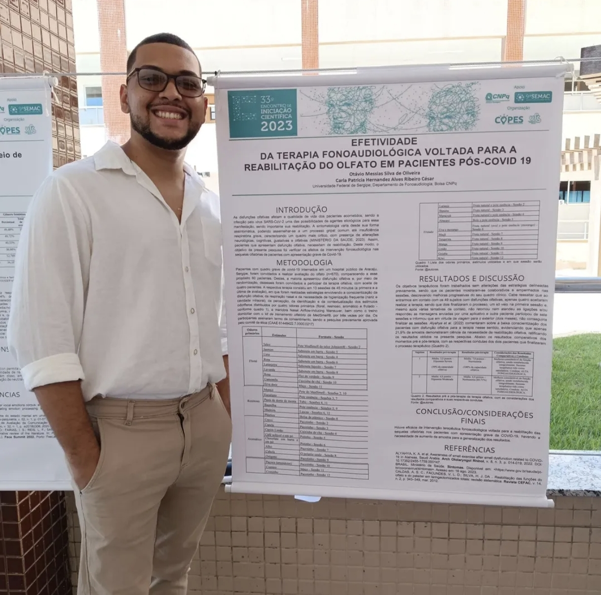
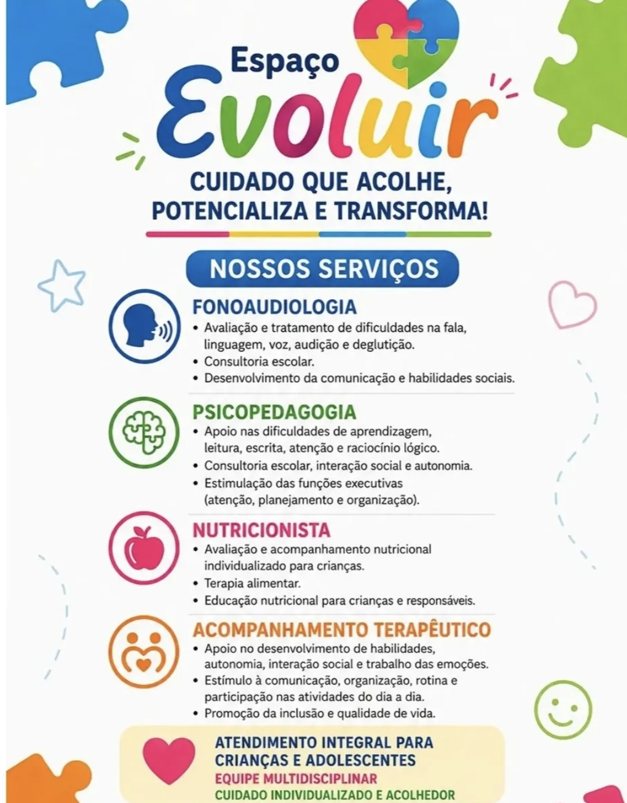
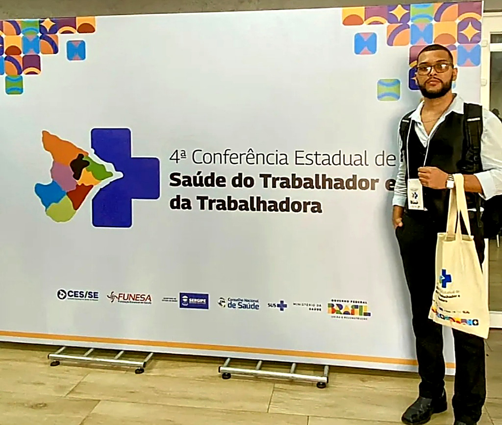

Avaliação Individualizada
Mapeamento detalhado dos marcos de desenvolvimento da linguagem, comunicação pragmática, motricidade orofacial e processamento da fala com testes padronizados.

Abordagem clínica especializada e humanizada em desenvolvimento da linguagem, intervenção no Transtorno do Espectro Autista com práticas baseadas em evidências (ABA) e acompanhamento analítico de desfechos clínicos.
Protocolos validados internacionalmente para intervenção segura e eficaz.
Domínio em Ciência de Dados aplicada a desfechos clínicos em saúde.
Ensino sistemático para ganho de repertório comunicativo e autonomia diária.
Métricas de evolução claras e alinhamento constante com a família e escola.
Mapeamento detalhado dos marcos de desenvolvimento da linguagem, comunicação pragmática, motricidade orofacial e processamento da fala com testes padronizados.
Sessões estruturadas que transformam o aprendizado em um ambiente motivador, aplicando a Análise do Comportamento para reforçar avanços reais e sustentáveis.
Mapeamento contínuo de curvas de aprendizagem através de dados clínicos, permitindo ajustes precisos no plano terapêutico para atingir o potencial máximo.
Cada voz carrega uma história única.
A ciência e a empatia pavimentam cada conquista.Fonoaudiólogo clínico comprometido com a transformação da comunicação humana e o desenvolvimento neurológico de crianças e jovens, especialmente dentro do Transtorno do Espectro Autista (TEA).
Com formação voltada à alta complexidade e especialização em Ciência de Dados em Saúde pelo Hospital Sírio-Libanês, une o olhar sensível do atendimento clínico diário à precisão da tomada de decisão baseada em dados reais e evidências científicas. Atua na clínica Espaço Evoluir, referência em desenvolvimento infantil e neurodivergência em Sergipe.
Atendimento planejado para atender cada indivíduo em sua singularidade, promovendo autonomia comunicativa e integração social com segurança científica.

Intervenções voltadas para comunicação expressiva e receptiva, intenção comunicativa, reciprocidade socioemocional e fala funcional no autismo.
Ensino sistemático por tentativas discretas (DTT) e ensino incidental, modelagem de repertórios verbais e redução de barreiras comportamentais.

Tratamento de trocas de fonemas, atrasos no desenvolvimento da fala, apraxia da fala na infância (AFI) e dificuldades articulatórias.

Sistematização e análise estatística de dados terapêuticos para medir curvas de evolução, assertividade de metas e desfechos clínicos.
Ambiente planejado com salas de integração sensorial, materiais pedagógicos adaptados e estrutura acolhedora para o desenvolvimento integral de cada criança.
Acompanhar vídeos no Instagram @fonotavio_
No Espaço Evoluir, o Dr. Otávio Messias atua em sinergia direta com psicopedagogos, nutricionistas e acompanhantes terapêuticos (AT) para garantir um desenvolvimento completo e integrado.
Escuta aprofundada da história da família, rotina, preocupações e primeiras impressões sobre a comunicação da criança.
Aplicação de protocolos científicos para identificar marcos de linguagem, barreiras comunicativas e repertórios comportamentais.
Elaboração de metas com mensuração de dados contínua, orientações para os pais e diálogo próximo com a equipe escolar e médica.
Apresentação de trabalho científico no 33º Encontro de Iniciação Científica sobre a efetividade da terapia fonoaudiológica baseada em evidências.

Participação ativa em simpósios e fóruns de ponta em saúde digital, inteligência clínica e práticas fonoaudiológicas avançadas.
Integração de saberes clínicos de alta complexidade com rigor metodológico, foco no paciente e tomada de decisão fundamentada em dados.
Respostas transparentes para as dúvidas mais comuns sobre avaliação, tratamento fonoaudiológico e método ABA.
A Ciência de Dados permite tabular e acompanhar graficamente a aquisição de novos comportamentos comunicativos, vocabulário e clareza de fala. Isso elimina o 'achismo' e oferece aos pais e médicos relatórios precisos sobre a eficácia de cada intervenção terapêutica.
A intervenção precoce é determinante para o neurodesenvolvimento. A partir do primeiro ano de vida, sinais como ausência de balbucio, pouco contato visual, não atendimento ao nome ou atraso na fala justificam uma avaliação preventiva.
O método ABA é utilizado para decompor habilidades complexas em passos menores e estruturados, associando reforçadores naturais para motivar a criança a interagir, vocalizar e expressar suas necessidades com autonomia.
Sim. O sucesso terapêutico se potencializa quando pais e cuidadores sabem como estimular a comunicação no cotidiano. Fornecemos orientações práticas, adaptadas à rotina familiar, para generalização dos ganhos clínicos.
Basta clicar em qualquer botão de agendamento desta página para iniciar uma conversa direta no WhatsApp. Nossa equipe verificará a disponibilidade de horários e esclarecerá todas as suas dúvidas com atenção e cuidado.
Agende uma avaliação inicial com o Dr. Otávio Messias e descubra como uma intervenção baseada em dados e acolhimento humano faz a diferença.
Agendar Horário pelo WhatsApp